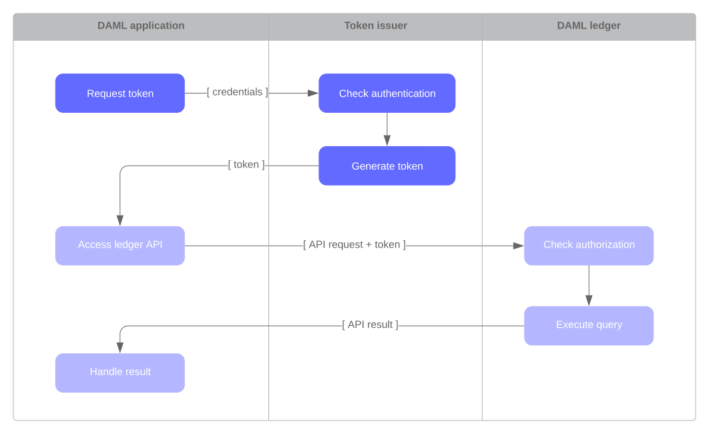

Authorization¶
When developing Daml applications using SDK tools, your local setup will most likely not perform any Ledger API request authorization – by default, any valid Ledger API request will be accepted by the sandbox.
This is not the case for participant nodes of deployed ledgers. They check for every Ledger API request whether the request contains an access token that is valid and sufficient to authorize the request. You thus need to add support for authorization using access token to your application to run it against a deployed ledger.
For the
Note
In case of mutual (two-way) TLS authentication, the Ledger API client must present its certificate (in addition to an access token) to the Ledger API server as part of the authentication process. The provided certificate must be signed by a certificate authority (CA) trusted by the Ledger API server. Note that the identity of the application will not be proven by using this method, i.e. the application_id field in the request is not necessarily correlated with the CN (Common Name) in the certificate.
Introduction¶
Your Daml application sends requests to the Ledger API exposed by a participant node to submit changes to the ledger (e.g., “exercise choice X on contract Y as party Alice”), or to read data from the ledger (e.g., “read all active contracts visible to party Alice”). Your application might send these requests via a middleware like the JSON API.
Whether a participant node can serve such a request depends on whether the participant node hosts the respective parties, and whether the request is valid according to the Daml Ledger Model. Whether a participant node will serve such a request to a Daml application depends on whether the request includes an access token that is valid and sufficient to authorize the request for this participant node.
Acquiring and using access tokens¶
How an application should acquire access tokens depends on the participant node it talks to and is ultimately setup by the participant node operator. Many setups use a flow in the style of OAuth 2.0:
First, the Daml application contacts a token issuer to get an access token. The token issuer verifies the identity of the requesting application, looks up the privileges of the application, and generates a signed access token describing those privileges.
Then, the Daml application sends the access token along with every Ledger API request. The Daml ledger verifies the signature of the token to make sure it has not been tampered with and was issued by one of its trusted token issuers, and then checks that the token has not yet expired and that the privileges described in the token authorize the given Ledger API request.
As shown above, using access tokens requires your application to attach them to every request. How to do that depends on the tool or library you use to interact with the Ledger API. See the tool’s or library’s documentation for more information. Here is for example the relevant documentation for the Java bindings and the JSON API.
Access tokens and rights¶
Access tokens contain information about the rights granted to the bearer of the token. These rights are specific to the API being accessed.
The Daml Ledger API uses the following rights to govern request authorization:
public: the right to retrieve publicly available information, such as the ledger identityparticipant_admin: the right to adminstrate the participant nodecanReadAs(p): the right to read information off the ledger (like the active contracts) visible to the partypcanActsAs(p): same ascanReadAs(p), with the added right of issuing commands on behalf of the partyp
The following table summarizes the rights required to access each Ledger API endpoint:
| Ledger API service | Endpoint | Required right |
|---|---|---|
| LedgerIdentityService | GetLedgerIdentity | public |
| ActiveContractsService | GetActiveContracts | for each requested party p: canReadAs(p) |
| CommandCompletionService | CompletionEnd | public |
| CompletionStream | for each requested party p: canReadAs(p) | |
| CommandSubmissionService | Submit | for submitting party p: canActAs(p) |
| CommandService | All | for submitting party p: canActAs(p) |
| Health | All | no access token required for health checking |
| LedgerConfigurationService | GetLedgerConfiguration | public |
| MeteringReportService | All | participant_admin |
| PackageService | All | public |
| PackageManagementService | All | participant_admin |
| PartyManagementService | All | participant_admin |
| ParticipantPruningService | All | participant_admin |
| ServerReflection | All | no access token required for gRPC service reflection |
| TimeService | GetTime | public |
| SetTime | participant_admin | |
| TransactionService | LedgerEnd | public |
| All (except LedgerEnd) | for each requested party p: canReadAs(p) | |
| UserManagementService | All | participant_admin |
| GetUser | authenticated users can get their own user | |
| ListUserRights | authenticated users can list their own rights | |
| VersionService | All | public |
Access token formats¶
Applications should treat access tokens as opaque blobs. However as an application developer it can be helpful to understand the format of access tokens to debug problems.
All Daml ledgers represent access tokens as JSON Web Tokens (JWTs), and there are two formats of the JSON payload in use by Daml ledgers.
Note
To generate access tokens for testing purposes, you can use the jwt.io web site.
User access tokens¶
Daml ledgers that support participant user management also accept user access tokens. They are useful for scenarios where an application’s rights change dynamically over the application’s lifetime.
User access tokens do not encode rights directly like the custom Daml claims tokens explained in the following sections. Instead, user access tokens encode the participant user on whose behalf the request is issued.
When handling such requests, participant nodes look up the participant user’s current rights before checking request authorization per the table above. Thus the rights granted to an application can be changed dynamically using the participant user management service without issuing new access tokens, as would be required for the custom Daml claims tokens explained below.
User access tokens are JWTs that follow the OAuth 2.0 standard with a JSON payload of the following format.
{
"aud": "someParticipantId",
"sub": "someUserId",
"exp": 1300819380
"scope": "daml_ledger_api"
}
The above notations are explained below:
audis an optional field, which restricts the token to participant nodes with the given idsubis a required field, which specifies the participant user’s idexpis an optional field, which specifies the JWT expiration date (in seconds since EPOCH)scopeis a space-separated list of OAuth 2.0 scopes that must contain the"daml_ledger_api"scope
Custom Daml claims access tokens¶
This format represents the rights granted by the access token as custom claims in the JWT’s payload, like so:
{
"https://daml.com/ledger-api": {
"ledgerId": null,
"participantId": "123e4567-e89b-12d3-a456-426614174000",
"applicationId": null,
"admin": true,
"actAs": ["Alice"],
"readAs": ["Bob"]
},
"exp": 1300819380
}
where all of the fields are optional, and if present,
ledgerIdandparticipantIdrestrict the validity of the token to the given ledger or participant nodeapplicationIdrequires requests with this token to use that application id or not set an application id at all, which should be used to distinguish requests from different applicationsexpis the standard JWT expiration date (in seconds since EPOCH)actAs,readAsand (participant)adminencode the rights granted by this access token
The public right is implicitly granted to any request bearing a non-expired JWT issued by a trusted issuer with matching ledgerId, participantId and applicationId values.
Note
All Daml ledgers also support a deprecated legacy format of custom Daml claims
access tokens whose format is equal to the above except for the custom claims
to be present at the same level as exp in the token above,
instead of being nested below "https://daml.com/ledger-api".